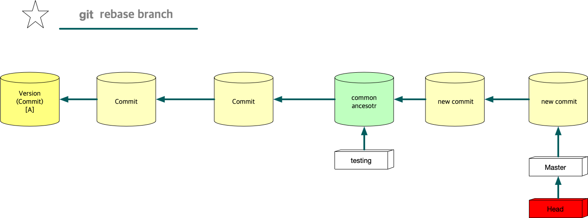

Git Explained
Table of Contents
1 Git Explained
1.1 Git Introduction
Git은 Version Controll System이다. *Git은 commit이라는 자료구조를 linked list로 연결*하기 때문에 linked list를 안다면 혹은 구현할 수 있다면, git을 이해하는 건 쉽다. linked list를 기반으로 git을 크게 4단계로 나누어서 설명할 것이다. 1단계는 git을 사용하기 위한 설치과정 및 linked list소개, 2단계는 local system에서 git의 사용, 3단계는 remote system에서 git의 사용, 4단계는 work flow다. 부록으로 git 내부 명령어를 설명할 수도 있다. 1단계는 어디가도 있는 내용이라서 그냥 가볍게 읽고 넘어가면 된다.
1.2 Git Drill(1단계)
1단계는 별다른게 없다. 그냥 대충 읽고 넘어가면 된다.
. git 설치 : system에 git program설치
. git init : .git(repository)을 만든다.
. git clone : .git(repository) 폴더를 가져온다.
. git configure : git을 설정한다. commit에 자신의 정보를 넣기위해서 필요.
. git ignore: git에서 처리하지 않을 파일을 기록
. git의 원리: linked list
git 설치(brew)
brew install git
git을 system에 설치, 간단히 brew로 설치
git init, git clone
git init git clone URL
git init으로 현재 폴더안에.git(repository)이란 폴더를 만든다. 처음에는 commit도 없고, branch도 없다. git clone URL에서 다른곳에 있는 .git폴더를 가져오는 것이다. git clone은 remote와 관련이 있기 때문에 3단계에서도 설명을 할 것이다.
git configure
git config --global user.name "[name]" git config --global user.email "[name]"
이제 저장할 공간도 확보했기 때문에 저장 하면 된다. 그런데, 좀 해주어야 할게 있다. 저장은 commit이란 형태로 저장되는데, 여기에는 어떤 사용자가 저장했는지, 언제 했는지 같은 meta data가 들어간다. 그 meta data를 설정해야 한다. 사용자 이름,email주소를 적어주면 된다.
git ignore
편집기에서 .gitignore이라는 파일을 열고 다음과 같은 내용을 쓴다.
*.log
.gitigonre파일에서 특정 파일을 commit에 포함시키지 않는다. commit을 지금 몰라도 나중에는 알게 된다. 배제할 파일 목록은 다음을 참고하면 된다. https://gitignore.io/
linked list
git은 commit이라는 형태로 version을 관리한다. commit은 snapshot이라고도 부르는데, 찰나의 사진이라고 번역할 수도 있다. 현재 folder에 .git이 있다면 현재 폴더의 순간적인 상태를 사진으로 찍어서, 즉 snapshot을 .git폴더에 commit이란 형태로 저장한다고 보면 된다. commit은 linked list를 사용해서 저장한다. 그냥 배열을 사용해서 무턱대고 집어넣는게 아니다. 배열은 공간의 크기가 정해져 있지만, linked list는 동적이다. commit들이 link로 연결되어 있는 것이다. 새로운 commit이 오면 기존의 연결된 commit과 연결되는 것이다.
1.3 git drill(2단계)
원하는 파일로 commit 만들기.
git은 저장시스템(repository)라고 했다. 무엇을 저장하는가? 우리가 원하는 파일을 commit의 형태로 repository에 저장한다. 그러면, 원하는 파일은 어디에 있는가? working directory라는 폴더에 있다. 그러면,repository는 어디에 있는가? working directory안에 .git이라는 폴더에 있다.
우리는 working directory의 폴더와 파일중에 commit할 것을 선택할 것이다. 선택하는 것들은 .git의 index란 파일에 기록될 것이다. 그것을 staging area라고 부르기도 한다. 여튼 우리는 선택을 해야 한다.
선택할 수 있게 git이라는 program은 git add라는 명령어를 제공한다. git add로 우린 하나 하나 원하는 파일을 선택해서 stage에 올린다. 하나 하나 선택하는 건 힘들수 있다. 왜냐면, 프로그램을 하나 짜더라도 너무나 많은 파일이 사용되고, 협업을 하게 되면 파일의 수가 많아지는건 너무나 당연하다. 그래서 보통은 git add ./* 로 전체를 올린다. 이렇게 stage에 올린 후에 git commit -m "message"를 입력하면 commit이란 형태로 저장된다. 앞으로 나오게 될 말이기도 하지만, 최초의 commit이 만들어지면, 그 때 master라는 branch도 같이 만들어 진다. Head는 이미 master를 가리키도록 HEAD라는 file에 기술되어 있다. 이런 세부적인 과정이 외우기 힘들면, commit이 만들어져야 head와 master라는 branch도 생겨난다고 이해해도 상관없다.
git add ./* git commit -m "message"
그림으로 보면 다음과 같다.
Figure 1: commit
commit 만들 때 유의할 점(2) - unstage하는 법
git reset HEAD [file]
stage에 올려진 파일을 stage에서 내릴때 사용한다.
commit 만들 때 유의할 점(3) - commit취소
commit을 만들었는데, 잘못 만들었다. 이럴 때도 git reset을 사용한다.
git reset HEAD^(이전 commit으로 되돌린다.)
summary
Figure 2: git commit과정
1.4 git drill3
말하는 점 조직이란게 이런것이다. 새로운 조직원은 말단 조직원을 통해서만 들어올 수 있고, 그 윗선은 알수가 없다.
또 다른 예로, 노래테이프도 linked list로 볼 수 있다.
array나 linked list나 원하는 자료를 찾을려면, 하나하나 다 살펴봐야 하는건 동일하다. 다만, array는 data가 없어도 살펴본다. 또한 array에서는 중간의 data를 살펴보는데, 어려음이 없다. 그런데 linked list는 중간의 data를 알려면, 이전의 data를 거치지 않고는 알 수 없다. 노래테이프도 그렇다. 생각을 해보자. 보물찾기를 해서 보물을 찾았는데, 보물에 다른 곳으로 가라고 적혀 있다면, 그곳에서 또 다른곳으로 가라고 적혀있는 것처럼, 원하는 것을 찾기위해선, 계속 찾아가야 하는 것이다.
#+endnote
Linked list 설명
git은 단방향 list를 사용한다. list는 처음에 Head만 있다. HEAD를 통해서 data를 담고 있는 Node가 연결된다. 이 과정을 그림으로 남긴다.
Figure 3: linked list
linked list는 자료구조다. 자료구조는 data를 추가하거나, 중간에 삽입하거나, 삭제하거나, 갱신하는 여러 동작을 수행할 수 있어야 한다. 그것이 data structure를 사용하는 이유이고, 목적이기 때문이다. Linked list의 그런 조작에서 HEAD의 복사본이 사용된다. HEAD는 항상 data가 들어가는 입구역할을 하고, 중간에 노드를 삭제하거나, 삽입,갱신, 이 모든것은 *HEAD의 복제본*을 사용한다.
변형 linked list
위에서 보면 linked list가 단방향을 가리키는 것을 볼 수 있다. Node의 삽입은 HEAD를 통해서만, 삽입되고, 마치 line과 같이 보인다. 만일 우리가 여기에 HEAD를 추가한다면 어떻게 될까?
Figure 4: new head list
HEAD를 추가하면 문제가 생긴다. Node를 삽입할 때, 어떤 HEAD를 사용해야 하는가? 이런 문제가 생긴다. 이런 문제를 해결하기 위해서 변수 하나를 더 추가한다. 어떤 HEAD를 선택할 지를 결정하는 변수다.
Figure 5: new head
최종 결과는 다음과 같은 모습이 된다.
Figure 6: summary1
Figure 7: summary2
Figure 8: summary3
변형 Linked list의 고찰
우선 array란 자료구조는 고정된 size를 갖기 때문에 자료를 저장할 구조로는 적합하지 않다. 어느 정도의 data가 그 공간에 삽입될지 예측할 수 없기 때문에 computer science에서는 linked list가 자료를 저장하는 아주 기본적인 구조다. 만일 무언가 자료를 넣어야 한다면 대부분 linked list를 생각해봐야 한다. linked list를 변형한 구조를 보여줬는데, 그 구조를 간단히 요약하면 다음과 같다. 기존의 linked list에 head만 붙이면 여러개의 list가 만들어짐을 볼 수 있었다. 그리고 Head라는게 Node삽입의 입구와 같기 때문에, 어떤 list에 삽입할 것인지는 HEAD를 정해줘야 한다. 그 HEAD를 정해주는 또다른 HEAD가 필요하다. 이 변형된 구조가 git이 가진 data structure다.
git data structure vs 변형 linked list
변형된 linked list를 git은 사용한다. 그런데 약간 차이가 있다. linked list라는 data structure는 기본적으로 자료를 저장하고, 찾고, 찾은 data를 수정하거나, 삭제, 추가에 대한 연산이 존재한다. 왜냐? 그럴려고 data structure를 사용하기 때문이다. 그런데 git에서는 그런 operation을 명확하게 지원하지 않는다. 지원하지 않는 이유는 한번 만들어진 Node를 수정이나 삭제 추가를 하게 되면 문제가 생기기 때문이다.
우선 git을 만든 목적을 생각해 보자. 우리는 git을 단순히 data를 저장하기 위한 목적으로 linked list를 사용한게 아니다. git의 목적중 하나는 협업이다. 각각의 사용자들이 있고, 각각의 사용자들은 변형된 linked list에서 하나의 line을 갖게 된다. 각각의 line에서 무수한 수정이 발생되면, 동기화의 문제가 생긴다. Head에서 새로운 data를 추가하는 것은 문제가 되지 않지만, 어떤 line의 중간의 data(Node)를 내가 삭제했다. 그런데 삭제되기전에 Node를 받은 사람이 그것을 수정해서 다시 서버에 올렸다고 하자. 나는 그 Node를 삭제한후 서버에 접속하지 않고 그것과 관련된 기능을 모두 삭제했는데, 다시 접속하니 이상한 파일들이 엉켜있다면? 문제가 되지 않을까? 그 git을 사용하는 사람이 1-2명이 아닌 100명,200명이 사용한다면?
git에서 history는 중요하다. 그것들이 여러사람에게 공유되고 동기화의 문제로 history의 중간 버전을 수정하는것은 상당히 위험한 행동이다.
git의 용어
git은 변형 linked list를 사용한다고 했다. linked list에서 사용하는 term과 git에서 사용하는 term이 다르기 때문에 정리한다.
Figure 9: git term
commit을 만들면 이것을 list에 삽입을 해야 하는데, list에서 삽입은 HEAD가 Node를 가리키는 방식이다. Git에서 HEAD는 branch를 선택하는 용어로 쓰인다. 그리고 Branch가 list에서 HEAD에 대응되는 용어다. 즉 branch가 새로운 commit을 가리키면서 삽입이 되기 때문에 Branch는 항상 최신(recently new) commit을 가리키고 있다고 보면 된다.
1.5 git drill4
흔한 질문
흔한 질문중에 하나는 git에서 history는 유지한 채, commit을 변경할 수 있느냐?는 것이다. 결론을 얘기한다면 원론적으로 불가능하다. 첫번째로 commit의 내용을 바꾼다는 것은 commit자체가 바뀐다는 것을 의미한다. commit은 content addressable하다. content의 내용을 sha1으로 바꿔 그것을 파일명,commit이름으로 쓴다. 만일 내용이 바뀌면 기존 commit과 다른 새로운 commit이 만들어지는 것인데, 그러면 history가 깨진다. 왜냐 새로운 commit을 만드는 것은 branch가 있어야 함을 의미하기 때문이다. 말이 좀 복잡해 지는데, linked list를 사용하는 git에서 새로운 commit을 만들면 branch가 그 commit을 가리키는 식으로 삽입이 된다. 즉 새로운 데이터를 삽입하는건 branch가 있는 곳에서 삽입이 된다는 것이다. 중간에 있는 commit을 수정한다는 것은(content addressable한 commit의 특성상) 새로운 commit을 만든다는 것인데, 이렇게 하기위해선, 우선 branch가 그 commit으로 이동해야 한다. 그리고 수정된 commit(실은 새로 생성된 commit)을 연결하는 순간 history는 깨진다. 왜냐 단방향 linked list라서 이전 commit으로 되돌아 갈수가 없게 된다. 참고로 branch를 특정 commmit으로 옮기는 명령어는 reset이란 명령어이다.
다시 정리하면,
- 수정할 commit으로 접근할려면 branch를 움직여야 한다. branch는 reset으로 움직인다. 물론 이전에 head가 해당 branch에 있다는 전제가 있다. head가 그 branch에 없다면, branch를 이동할 수가 없기 때문이다. 여튼 head와 branch가 묶여 있고, reset으로 해당 commit으로 이동했다고 하자.
- commit을 수정한다. commit을 수정한다는 것은 새로운 commit이 만들어진다는 뜻이다. 왜냐? content addressable한 특징때문에, content의 내용이 달라지면 새로운 commit이 되기 때문이다. 현재 branch가 그 commit을 가리키고 있는데, 새로운 commit이 만들어지면, head와 branch는 새로운 commit을 가리키게 된다. 그리고 원래 branch가 있던 commit은 가리키는 branch가 없기 때문에 잃어버리는 history가 된다.
git commit
git commit은 linked list에 commit을 삽입한다. linked list의 HEAD는 branch라고 하는데, default branch는 master란 이름을 가지고 있다. 그리고 git은 변형 linked list를 사용하기 때문에 HEAD라는 branch를 선택하는 변수가 있다.
Figure 10: git commit
git commit –amend
git commit –amend는 commit을 갱신하거나 삭제하는 효과를 준다. commit을 하고보니, 어떤 파일을 추가시키는 거 깜박했거나, 수정하는것을 깜빡했을때, 우리는 이전 commit지우고, 새로운 commit을 연결하면 되겠네! 할 것이다. 비슷하다. 그런데 이전 잘못 올린 commit은 그대로 둔다. 대신 제대로 반영한 commit의 parent를 잘못만든 commit이 아닌, 그 부모에 연결 시키는 방식을 사용한다. 왜 지우지 않나요? 어차피 linked list구조에서 head나 branch가 지워야 할 commit을 parent로 연결하지 않으면, 그 commit을 접근할 방법이 없다. linked list는 array와 달라서 link가 없으면 접근할 방법이 없다. 그래서 그냥 놨두면, git garbage collector가 branch가 접근할 수 없는 commit을 삭제한다.
Figure 11: git commit –amend
git branch
git은 변형 linked list를 사용한다. linked list를 처음 만들면 head밖에 없다. 이 상태에서 data가 계속 삽입되는데, linked list는 head로 부터 만들어진다고 보면 된다. 즉 head가 10개 있으면, 10개의 linked list가 있다고 보면 된다. head를 git에선 branch라고 부른다. git branch를 3개 만들면 3개의 line(linked list)가 만들어지는 것을 아래 그림에 표시했다.
Figure 12: git branch
git remote
원격에 있는 git은 URL을 갖는다. 그 URL에 이름을 붙일 수 있다. 이 때 쓰는 명령어가 git remote이다.
git remote add pb git://github.com/paulbone/ticgit.git
git clone을 하게 되면 원격 URL은 origin이란 이름을 갖게 된다.
git clone
git clone은 server에 있는 git repository를 local로 가져온다. local에서 작업할 수 있는 branch가 하나 만들어지는데, commit을 담을 수 있는 주머니가 만들어진다고 보면된다. 그리고 server에 있는 주머니의 주둥이(입구)는 origin/master란 이름을 갖는 입구인데, 움직이지 않는다. server와 local의 동기화를 위해 사용되는 bookmark라고 보면된다. origin은 위에서 말했듯이 원격 git의 URL의 이름이기도 하다. git remote add로 별도의 이름을 짓지 않았기 때문에 origin이란 default이름을 갖게 된다. 원래 remote server의 git안에는 수많은 branch가 있을 수 있다. 하지만 clone을 하면 default로 git의 URL주소는 origin이라는 name을 갖고 master branch만 tracking branch가 된다. 나머지 branch는 참조가 없기 때문에 local에선 사용할 수 없다. origin/master 브랜치만 tracking되기 때문에 clone하면 local master branch가 만들어지고 push,pull 모두 remote git server의 master branch에 특별한 기술없이 사용될 수 있는것이다. 예를들어 server에 testing이란 branch만 있다고 하자. 그러면, git clone하면, local에는 origin/testing이라는 branch와 testing이란 branch가 생기게 된다.
Figure 13: git clone
git checkout [head 이동명령어]
git checkout은 Head를 이동한다. 그리고 그 Head가 가리키는 commit의 working directory를 복원한다. git checkout은 commit을 하느냐 혹은 branch를 하느냐에 따라서 그 의도가 다르다.
1.git checkout commit 2.git checkout branch
git checkout commit: 이것의 의도는, 해당 commit의 내용을 확인하기 위해서다. Head가 해당 commit으로 이동하면서, 그 commit의 working directory를 복원하기 때문에 실제 그당시, 그 commit의 source를 볼수가 있다. 그런데, 여기서 수정은 할 수 없다. 왜냐? 수정을 하고 commit을 하면, 수정된 commit은 수정되기 이전의 commit을 가리킬 수는 있다. 하지만, 해당 linked list의 branch에선 이 새로운 commit으로 이동할 수가 없다. link가 없기 때문이다. 그러면, 이렇게 수정한 commit은 접근할수 없는 미아 commit이 되고 나중에 git garbage colloector에 의해 사라지게 된다. 그렇다면, 수정을 한 후 저장만 하고, commit을 안하면 그냥 갱신된 내용의 commit을 유지하지 않을까? 이것도 안된다.왜냐하면, commit의 내용이 수정되었다는 것은 content addressable한 commit의 특성상 새로운 commit이 되어 야만 한다. 그래서 수정을 하고 저장을 했다 하더라도 git은 동작을 전혀 할수가 없다. 왜냐, git status에 보면, commit에 변경사항이 생겼는데, 이를 처리하지 않아서 아무것도 할 수 없다고 말한다. 그러면 선택은 2가지다. 새로운 commit을 만들거나, unstage하는 경우다. 새로운 commit을 만드는 것은 방금전에 설명한 이유로 안되고, 2번째는 unstage하는 것이기 때문에 commit이 수정되기 전의 상태로 되돌려진다. 즉 수정이 아예 안된다.
Figure 14: git checkout commit
- git checkout branch: 이것의 의도는 해당 branch가 가리키는 commit으로 working directory가 복원되고, 수정도 할 수 있고, 새로운 commit을 만드는 것도 가능하다. content-addressable하기 때문에 수정이나, 새로운 commit을 만드는 거나 동일한 일이다. 이전에 설명했듯이, linked list는 하나의 주머니로 봐도 되고, 또한 주머니의 입구는 branch로 비유할수도 있다고했다. 여러 주머니가 있을 경우, 특정 주머니를 선택해야 하는데, 좀 더 정확히는 특정주머니의 입구를 선택해야 한다. 왜냐면, 그래야 commit을 담을 수 있기 때문이다. git checkout은 특정주머니의 입구를 선택하는것이다. 그림으로 보고, 설명한다면, Head를 branch로 움직이는 명령어를 git checkout으로 말할 수 있다. Head를 branch로 움직이는건 일반적이고, 정상적인 동작이다. 특정 commit으로 이동도 가능하지만, 그러나 그런 이동은 위에서 말한바대로 source를 보기위한 목적이다. 수정은 추천되지 않고 바람직하지 않다. 왜냐? history가 깨질 위험이 있기 때문이다. history가 깨진다는 것은 여러 사용자가 공유하는 git이 동기화하는데 문제가 생길 수 있다. 그래서 git에선 commit으로 head를 이동해서 수정하는 것을 허용 하지 않는다.
Figure 15: git checkout
git log
git log는 head를 기준으로 최초 commit까지의 모든 commit들을 보여준다. 그런데 Head의 원래 역할은 branch를 선택하는게 주 역할이기 때문에, 그 기준으로 살펴보겠다. 즉 branch로 부터 최초 commit까지 모든 commits(history)를 본다고 생각하자. git에서 branch는 linked list라는 주머니의 입구다. 그 입구로 넣어진 commit들은 차곡 차곡 안쪽부터 넣어진다. 그리고 각각의 commit은 연결 되어 있다. 제일 처음 넣어진 commit은 연결이 없다. 그 다음 commit은 처음 넣어진 commit을 가리키고 있다. 주머니안으로 넣어진 commit은 이렇게 단방향 link로 되어 있다. 반대 방향으로 link는 없다. git log는 해당 branch, 즉 주머니의 입구에서 주머니 안쪽의 commit들을 보는 것이다.
Figure 16: git log
위 그림에서 2개의 주머니가 보인다. 하나는 Testing이란 입구를 가진 주머니, 또 다른 하나는 master란 주머니가 있다. Testing이란 주머니에서 git log를 하면, E - B - A를 볼 수 있다. Master란 주머니에서 git log를 하면 D-C-B-A를 볼 수 있다. 이렇게 볼 수 있는건 parent란 link가 commit사이를 연결하고 있기 때문이다. 이것은 단방향이기 때문에 branch에서 주머니의 마지막 commit까지 보이는거지, 반대로 주머니끝에 있는 commit에서 branch방향으론 볼 수 없다.
git reset [branch 이동]
git reset은 branch를 이동하는 명령어다. branch를 움직이기 위해선, 우선 branch가 선택되어야 하기 때문에 HEAD가 branch를 가리키고 있을 것이다. 이 상태에서 git reset commit 하면, 해당 commit으로 branch가 이동하게 된다. 이 이동은 좀 위험한게 있다. 해당 commit으로 이동하면 branch가 있던 commit으로 되돌아갈 방법이 없다. link가 없기 때문이다. history가 깨지는 문제가 있다.
Figure 17: git reset
git merge
git merge는 2개의 linked list를 합치는 것을 의미한다. 다르게 표현한다면, 2개의 branch를 합한다고 말해도 된다. 또는 2개의 line을 일치시킨다라고 말할 수 있다. branch를 이동하는 명령어의 일종이기도 하다. 이렇게 merge를 하면, 동일한 하나의 linked list가 만들어진다. 그런데, 2개의 linked list가 하나의 linked list를 가리킨다는건 비효율적이기 때문에 필요없는 branch는 보통 지운다. 근데 왜 merge를 하는가? 왜 linked list를 합쳐서 하나로 만드는가? 여기에 대한 대답은 git workflow에서 설명이 되겠지만, 간단히 설명하자면, 하나의 제품을 만들기 위해서라고 말할 수 있다. 여러사람이 각각의 소스를 가지고 있는데, 그것을 하나로 모아서 build를 해야 실행파일이 만들어진다. 멀리떨어져 있는 개발자들끼리 어느날 한날 한시에 모여서 노트북에 있는 소스를 하나의 컴퓨터에 모아서 copy & paste해서 하나의 프로그램으로 합치고 실행하고 bug고치고 그렇게 하지 않는다. 이건 아주 옛날 방식이다. 2명이서 게임을 개발하는데, 한명은 client, 다른 한명은 server를 작성한다고 하자. client와 server를 합쳐야 프로그램이 실행이 된다. 두개의 source code를 합쳐야 한다. 이때 merge를 사용한다. 자세한 내용은 git workflow서 설명하기로 하자.
master: git merge testing(branch명) : master branch가 이동한다. testing branch가 이동하는게 아니다.
2가지 경우가 있다. 이것을 2 way merge(fast-forward), 3 way merge가 있다.
2 way merge
2-way merge는 2개의 linked list가 동일한 line을 갖는 경우를 말한다. 아래 그림을 보면, master의 위에 testing이란 branch가 같은 line에 있다. upstream에 testing이 있다고 표현하기도 하지만, 이 경우, 두개의 linked list는 동일한 분기를 하고 있고, 서로 다른 분기를 갖지 않기 때문에, 합친다는 건, 그냥 간단히 master가 testing의 위치로 가던가, 아니면 testing이 master의 위치로 가면 된다. master를 testing위치로 가게 하려면, master로 우선 선택해야 한다. git checkout master를 사용한다. 그다음 git merge testing을 실행하면, master를 testing으로 이동 시킨다. 반대로, testing을 master위치로 이동 시키려면, git checkout testing으로 head를 testing으로 이동한 후, git merge master라고 하면, testing branch가 master로 이동한다.
2 way merge는 conflict가 발생하지 않는다. 2개의 branch중 1개의 branch를 선택하는것이기 때문이다. 더 긴 line을 갖는 linked list가 작은 line으로 merge된다면 commit을 잃을 순 있어도 conflict는 없다.
Figure 18: git merge(fast forward)
3 way merge
3 way merge가 더 일반적인 경우고 conflict가 일어날 확률이 있는 merge다. 아래에서 충돌이 일어나는 경우를 설명한다. 충돌이 일어나지 않는 경우는 merge commit이 자동으로 만들어지고, 충돌이 일어나면 수동으로 merge commit을 만드는 차이가 있다.
여기서 b.txt란 파일이 양쪽 linked list에 둘다 있다. 그럼 반드시 충돌이 일어나게 되어있다. 왜냐 어떤 linked list에 있는 b.txt를 선택할지 모르기 때문이다. 아니면, 두개의 contents를 무리하게 하나의 파일로 만들 수도 있겠지만, git은 그렇게 하지 않는다.
Figure 19: 3way merge 2
위 그림 보면, b.txt가 양쪽 linked list에 있기 때문에, stop된다. conflict를 수정하기 전에는 merge가 되지 않는다. 수동으로 수정하고 commit을 만들어야 한다. 여기서는 하나의 b.txt만 충돌하지만, 10개의 파일이 충돌이 났다면, 일일이 수정을 해야 한다. b.txt를 편집기로 열면, git이 이미, 충돌 부분을 표시해 놨다. 사용자는 source를 수정한다. 그리고 내용이 바뀌었기 때문에 commit을 만든다. 그러면, master branch가 선택된 상태에서 commit을 만들기 때문에 master branch는 새 commit을 가리키게 된다. 이 commit이 merge commit이다. 이 과정이 끝난 후의 git은 다음과 같이 merge되어 있다.

Figure 20: 3 way merge 3
summary
2way merge는 그냥 branch이동에 불과하다. 3way는 합칠려는 line이 다르기 때문에, conflict문제가 발생하고 이를 처리해야 하는 어려움이 있다. 그런데 git이 conflict에 대해 해주는 것은 어떤것이 충돌이 났는지 표시만 해줄뿐이다. 이것이 어떤 의미냐면, 파일이 수정되었기 때문에, 새로운 commit을 만들어야 한다는 것을 내포한다. content addressable하기 때문에 기존의 content의 변화가 생겼기 때문에, commit을 어쩔수 없게 만들게 한다. 여튼 git은 conflict에 대해, 하는건..이거 하나다. 실질적으로 사용자가 source를 수정하고 반영해서 git add하고 git commit해서 새로운 commit을 만드는것이다. 이것을 merge commit이라고 한다. merge commit은 수동으로 사용자가 만드는 commit이라는 것을 명심하자. git이 만들어주는게 아니다. 그런데 충돌이 없다면? 자동으로 git이 merge commit을 만든다.
git rebase
rebase는 base를 옮긴다. A와 B의 base가 C라고 하자. 만일 A가 base를 C가 아닌 B로한다면, A는 우선 B를 가리키고, A와 C사이에 있던 commit들은 갱신되어서 추가된다. 왜냐 base가 바뀌었기 때문에 history를 나타내는 commits도 바껴진 base에 맞추어 내용이 변경되기 때문에 새로운 commit들이 만들어지는 것이다.
rebase란 말은 base를 다시 정한다는 말이다. base라는 것은 common ancestor를 의미한다. common ancestor가 있다는 얘기는 우서 linked list가 2개 이상이라는 의미이다. 그러면 branch도 2개 이상임을 알 수 있다. 이런 조건에서 rebase명령은 사용될 수 있다. 그런데, 왜 base를 재 지정하는가? diverge된 2개의 linked list는 서로 다른 방향을 향하고 있다. 언젠가는 2개의 linked list를 합쳐야 하는데, 방향이 다르기 때문에 충돌이 일어날 가능성이 매우높다. 그것을 방지하게 하려면 방향이 같게 만들면 된다. base를 다른 branch로 정해주면, 동일한 방향을 갖는 line이 만들어지고 이것은 충돌을 예방할 수 있다.
Figure 21: git rebase 1
제일 먼저 master branch를 base로 할려는 branch로 이동 시킨다.
Figure 22: git rebase 2
그 다음 master와 base사이에 있는 commit들은 위에서 정한 새로운 base와 diff를 통해서 새로운 commit들이 만들어진다. Head가 master에 있기때문에 만들어진 commit들은 master가 가리키게 된다.
Figure 23: git rebase 3
diff로 비교했던 commit 두개는 B라는 commit을 가리키고는 있지만, branch가 아래로 내려갔기 때문에 garbage collector에 의해서 사라진다.

Figure 24: git rebase4
summary
rebase는 반드시 특정 branch를 base로 하지 않고 특정 commit을 base로 할 수도 있다.
Figure 25: rebase summary
위 그림에서 testing은 base를 X라는 node로 바꾸고 싶다. 그러면 rebase를 명령하기 위해서 git checkout testing으로 testing branch를 선택하고 git rebase X라는 명령을 수행한다. 그러면 아래처럼, branch가 new base로 이동한다.
Figure 26: rebase summary 2
A라는 commit과 new base라는 commit이 diff과정을 통해서 new commit이 만들어진다. branch가 있는 가운데 new commit이 만들어졌기 때문에 testing branch가 new commit을 가리키게 된다. A라는 commit은 branch에서 보이지 않는 commit이기 때문에
git push
git은 단방향 linked list를 사용한다.그리고 linked list의 Node는 content addressable한 특성이 있다고 했다. content addressable하다는 것은, 파일이름이 같아도 내용이 다르면, 서로 다른 Node(commit)가 된다. content가 다르기 때문이다. 그래서 git에서 사용하는 linked list는 일반적인 data structure의 linked list와는 동작이 다르다. 일반적인 단방향 linked list는 중간 Node를 수정하는게 가능하지만, git은 content addresable한 data를 취급하기 때문에 수정이나 변경은 새로운 Node를 만드는 것이 되어버린다. 그래서 일반적인 data structure의 갱신처럼 동작을 하려면, 삽입을 해야 하는 식으로 흉내를 낼 수 있다. 그런데 새로운 Node를 추가하는 것은 linked list에서는 head에서만 가능하다. 이것을 보장해야 한다. 이게 git의 기본적인 특성이다. git push를 설명하는데, 왜 이런 기본적인 내용을 설명하냐면, git push에서 이런 기본적인 내용을 바탕으로 동작을 이해해야 하기 때문이다.
git의 push,pull,fetch와 같은 명령어는 local에서 사용하는게 아닌 원격지에 있는 git을 사용하는 것이기 때문에 git이 remote에서 어떻게 동작하는지 알아볼 필요가 있다. 원격의 git이 있다고 가정하자. 우리가 원격의 git을 가져오는 방식은 2가지가 있다.
1. git clone URL 2. git remote add name URL
1번의 경우는, URL을 다른이름으로 기술하지 않는한, origin이라는 이름을 갖는다. 그리고 remote branch는 origin/master가 된다. remote git의 URL을 다른 이름으로 mapping하지 않고, branch도 다른이름으로 mapping하지 않으면, default name이 origin과 master이다.
2번의 경우는, git url이 가리키는 git에 이름을 부여하는 것이다. 이 경우 실제 remote git commits을 가져올려면 git fetch같은 명령어를 써야 한다.
둘다, origin/master라는 server의 특정 branch를 가리키는 branch가 생기는데, 이 branch는 움직일수 없다. 마치 bookmark처럼 움직일수가 없다. branch를 움직이는 경우는, git commit으로 새로운 commit을 만들거나, git reset으로 특정 commit으로 이동하거나, git rebase로 이동 시킬수 있는데, 이 모든게 안된다는 것이다. 가장 중요한건 아무래도 그 branch를 우리가 commit을 저장하는 linked list로 사용할 수 없다고 이해하는게 가장 편하다.
john과 호열이 git clone해서 특정 server에 있는 git을 local로 가져왔다고 가정하자.
Figure 27: git push 1
clone을 하면 server의 linked list를 가져오게 된다. origin/master라는 server의 branch가 보여진다. 그리고 master라는 또다른 local linked list가 자동적으로 만들어진다. origin/master는 server와 동기화 될때 갱신되고, local master는 우리가 작업하는 branch라고 보면 된다. 간단한 예로, John이 새로운 commit을 만들어서 server에 반영했다고 하자.
Figure 28: git push 2
별 문제가 없다. 이제 호열이 B라는 commit을 만들고 push해보자.
Figure 29: git push 3
에러가 난다. 호열은 push를 할 수 없다. 호열이 origin/master라는 server의 linked list의 head에 commit을 붙일려고 하지만, 할수없다. 왜냐면,음…호열은 origin/master branch는 Node를 삽입할 수 있는 linked list란 주머니의 입구라고 생각해서 push했는데, john이 이미 push를 해서, head가 이동했다. 호열이 생각한 server의 master는 이동을 했기 때문에 삽입이 불가능해진것이다. linked list의 삽입은 branch, 즉 head에서만 가능한데, head가 옛날 head였던 것이다. 위에서 말했듯이 linked list는 head가 아닌 다른곳에서의 삽입은 불가능하다. 여튼 이런 일은 매우 빈번하게 발생한다. 10명의 개발자, 100명의 개발자가 일을 한다면,서버에 계속해서 commit을 올리고, 이 commit이 삽입된 순간, server의 branch는 이동을 한다. local에서 참조하는 server의 branch는 옛날 데이터 삽입구다. 그래서 commit을 올릴수가 없게 된것이다. 그래서 항상 push하기 전에 server의 git을 pulling or fetch해서 입구를 확인한다음에 push를 해야 하는 것이다.
git pull
git reflog
git tag
git tag는 branch가 아니다. tag는 release를 나타내는 표지판 같은 역할을 할 뿐이다. 두가지 종류의 tag가 있는데, 그리 중요하지 않다.
1.6 git drill5
git repository
여기서는 repository가 한개만 쓰이는 (1인개발자가 사용하는 그런) minor한 경우를 다루지 않는다. 2개이상의 repository가 사용되는(즉, 협업을 하는) major한 경우를 다루고자 한다. 그럴려면, git repository에 대해서 좀 생각을 해봐야 한다. git repository란 일반적으로 commit이 저장되는 공간을 뜻한다. 물론, commit, tree,blob과 같은 object도 있고, branch,head,tag와 같은 reference도 그 repository에 저장이 된다. 그런 구조 말고, 좀더 본질적으로 말해보자. repository는 자료구조다. commit이라는 data를 저장한다. commit은 단방향 linked list로 저장이 된다. 이것은 마치 지렁이게임의 지렁이와 같다. 먹이를 입으로 먹으며 한없이 길어지는 지렁이… 이런 지렁이들이 git repository에는 10개, 100개, 10000개가 있을 수 있다. 그런데 그 지렁이들의 공통점이 있다. 그들의 꼬리는 모두 하나의 commit을 공유한다는 것이다. 즉, 태초의 commit으로부터 branch라는 입이 생겨서 계속해서 commit을 먹어서 길어지긴 하지만, 모두 1번째 commit을 갖는다. 그것이 git repository의 본질이다. 그림으로 그려보자.
Figure 30: basic linked list
Figure 31: basic linked list2
Figure 32: basic linked list3
repository의 본질을 얘기하면서 최초 commit은 모든 repository내의 branch가 가지고 있다는 것을 강조했다. 왜냐면 우리가 사용할 remote repository, local repository는 모두 하나의 뿌리로부터 파생된 branch를 갖는다. 단 한개의 뿌리를 갖는 tree처럼… 그렇기 때문에, 우리가 git remote add origin1 url, git remote add origin2 url … 이런식으로 여러 remote에 있는 repository를 내 local repository를 가져온다고 해도, 실제는 해당 remote repository는 같은 뿌리를 갖는다. 물론 내 local repository조차도 그렇다.
예를 들어서, 삼성전자의 repository가 있고, LG전자의 repository가 있다고 하자. 내가 local repostiory에서 그 2개의 repository를 가져올 수 없다. 하나는 clone하고 다른 하나는 fetch를 해도 안된다. warning이 발생한다. 그 이유로 최초 commit이 다르다. common commit이 없다. 만일 최초 commit이 같다면, 우리는 하나의 .git폴더에서 관리할 수 있게 된다. 그런데, 이 2개의 repository는 서로의 .git폴더를 가지고 있고, 서로 다른 2개의 working directory를 가져야한다. 그런데 우리의 local repository는 단1개의 working directory와 단 1개의 repository다. 그 repository에서 삼성전자는 clone했고, Lg전자는 fetch로 가져올려고 해도 서로다른 repository이기 때문에 1개의 local repository에 담을 수가 없는 것이다. 반면에 commit이 같다면, 우리는 10개의 repository,100개의 repository가 있다해도, 1개의 repository에 담을 수 있다. 물론 branch의 수는 늘어날 것이다. 이것을 그림으로 표시해 보겠다.
Figure 33: repo 1
Figure 34: repo2
위에 처럼 뿌리가 같기 때문에 하나의 local repository에서 관리가 가능한 것이다. 뿌리가 같지 않으면 다른 repository를 현재 작업중인 local repository에 가져오질 못한다. 또 다른 예로, 자신이 local repository에서 자신만의 project를 개발하고 있는데, github에서 어떤 비슷한 project를 발견해서 이를 git clone이나, git fetch로 가져와서 내 repository에서 작업하고 싶다. 가능할까? 당연히 안된다는 것이다.
git 원격저장소와 관련한 용어들
1. Upstream, Downstream
git 사용, 특히 remote repostiory와 관련해서 알아야 할 용어가 있다. 이런 용어를 알아야만, git push, git pull과 같은 동작을 이해 할 수 있기 때문이다. 혼자 개발 하지 않고, 여러사람이 협업을 한다면, 여러사람이 공동으로 사용하는 repository가 필요하다. 자신의 repository가 아닌 repository를 remote repository라고 부른다. 협업시 local repository는 remote repository부터 자신이 가지고 있는 commit이나 branch를 내려받기 때문에, stream에 비유해서 remote stream을 upstream이라고 하고, local repository를 downstream으로 사용하기도 한다.
Figure 35: stream
2. remote branch,tracking branch,local branch
위 3가지 용어는 협업시 local repostiory에 있는 branch의 종류다. remote repository를 사용해서 협업하는 경우, local에서 git clone이나, git remote add name URL을 한 후, git fetch를 해서 remote repository을 가져와야 한다. 이것을 가져오면, 위에 말한 3개의 branch를 볼 수 있다. 그래서 git clone을 해서 가져오는 경우와, git fetch를 가져오는 경우를 설명하면서, 이 용어를 설명하겠다.
git clone의 경우
git clone을 하면 remote repository의 모든 요소를 다운받는다. 하지만, git branch라는 명령을 내리면, master라는 branch만 보인다.
Figure 36: real clone
git fetch의 경우
git fetch를 하면 remote repository의 모든 요소를 다운받는다. 하지만 git branch라는 명령을 내리면 아무것도 보이지 않는다.
Figure 37: real fetch
설명
위 그림에서 오른쪽에 보면, origin/master, origin/issue33가 보인다. 이것을 remote branch라고 부른다. remote란 단어가 좀 혼란스럽게 만든다. remote branch라고 하면 server에 있는 branch를 생각한다. 물론 그것을 가리키는 것도 맞고, local repository에 있는, origin/master, origin/issue33같은 branch도 remote branch가 맞기 때문이다. 실제 local repository의 remote branch(origin/master)를 진짜 원격지 branch로 보고(생각하고) 작업을 한다.왜냐면, origin/master라는 것은 실제 server와 동기화된 branch이기 때문이다. 그래서 인터넷이 연결 안되어 있는 상태에서도 git을 사용할 수 있다고 하는 것이다. 왜냐면 어차피 인터넷을 연결하고 있어서도 실시간 동기화를 하는게 아니기 때문이다. git fetch나 git pull로 동기화를 하기전까지는 local의 remote branch를 보고 작업을 하기 때문에 인터넷이 연결되지 않은 상태로, 원래 작업을 하는 것이다. git pull과 git fetch를 하기전까진 어차피 offline작업일뿐이다.
tracking branch
위에서 git clone과 git fetch의 가장 큰 차이점은 tracking branch이다. git clone은 tracking branch를 만들어주지만, git fetch는 tracking branch를 만들지 않고 server에 있는 linked list를 그냥 가져오기만 한다. 즉 remote branch만 있다. 그럼 tracking branch가 무엇인지 설명해야 하는데, 이게 좀 길 수 있다. 간단히 얘기하면 git push와 pull은 tracking branch를 필요로 한다는 것이다.
remote branch는 local에선 보이지 않는다. git branch해도 안보인다. 또한 checkout해서 새로운 commit을 만들수도 없다. 그래서 remote branch는 단순히 서버와의 동기화를 위해 bookmarking역할만 하는 branch이다. 다시 한번 더 설명하면, remote branch는 git branch 명령어로 보이지 않는다. 물론, git branch -a 나 git branch -r을 사용하면, 볼수 있다. 오 그래? 그러면 git checkout origin/master명령어를 실행해서, 그 branch로 HEAD를 이동한 후에 commit을 만들면 되는거 아냐? 그러면 remote branch에 commit을 추가했으니 동기화하면 되는거 아니냐구? 안된다. 우선 bookmark branch는 commit을 만든다고 bookmark branch가 새로운 commit을 가리키지 않는다는 것이다. bookmark branch가 이동하는 경우는 오직 한가지, 서버와 push,pull,fetch등으로 동기화할 때만 움직인다. 그러면 새로운 commit을 만든다고 해도, Head만 그 commit을 가리킬 뿐이다. branch에서 떨어져나간 HEAD가 commit을 가리켜봤자, 그 commit은 server에 push될 수 없다. push라는 동작은 우선 local에서 동작된다. local에 있는 remote branch의 위치를 현재 tracking branch의 위치로 이동 시킨다. 그런다음 remote branch(origin/master)를 진짜 server의 master branch에 넣는 과정이 필요한데, 우선 Head가 가리키는 branch자체가 없다. 그래서 remote branch는 이동할 수도 없다. branch가 있다하더라도 tracking branch여야 하는데, 단지 새로운 commit만 만들어서 이를 push하는건 될수가 없다는 것이다. push를 할려면, branch가 필요하고, 해당 branch가 특정 remote branch의 tracking branch일때만 push가 된다.
그런데, 우리가 remote repostitory를 local에 clone이나, fetch 즉, 복사하는 이유는 협업을 하기 위한거였다. server로부터 branch와 commit을 다운로드해서 history를 볼려는 게 아니라, server에 내가 만든 commit을 추가하는 협업을 원한건데, remote branch에 checkout해서 commit을 만들어도 안된다니 그러면 어떻게 하라는 건가? 그래서 tracking branch가 필요한 것이다. 우리가 다운받은 remote branch라는 것들은 commit 삽입이 안되기 때문에 remote branch와 동일한 이름을 갖는 local branch를 만들고, 이것이 tracking branch라고 git에게 알려주기만 하면 우리는 push로 local에서 만든 commit을 server에 전송할 수 있는 것이다. 즉 tracking branch가 필요한것은 commit을 upstream에
올리기 위해서 필요한거다.
요약하면, tracking branch는 local branch이다. server에 있는 remote branch에 commit을 올리기 위해 만들어진 local branch이다. 원격 server의 branch나 commit들을 git fetch나 git pull을 사용해서 가져오는 것은 별 문제 없으나, server에 local의 commit을 올릴려면 tracking branch가 있어야 한다. 다운받은 server의 branch들은 모두 bookmark branch라서 commit이 추가 될 수도 없기 때문에 tracking branch에 commit을 추가하고 올린다.
Figure 38: branch term
이제 좀 더 자세하게, git push, git fetch, git pull을 살펴볼 것이다.
git clone
위에서도 설명했지만, server에 있는 git repository를 온전히 local로 가져오는 명령어는 git clone과 git fetch가 있다. 그런데 온전히 모든것을 local로 가져오더라도, local에서 remote branch에 commit을 추가할려면, tracking branch가 필요하다. local에서 remote branch들은 sync를 위한 bookmark branch이기 때문에 commit이 추가가 안된다. git clone은 git fetch와 달리 tracking branch를 하나 만들어준다. 어떤 remote branch의 tracking branch인것도 중요한데, 보통은 Head가 가르키는 branch이다. 원격 서버의 master branch를 tracking하는 branch를 처음부터 default로 만들어주게 된다. 그래서 tracking branch의 이름은 master 이다. 다시 말하면 server의 HEAD가 가리키는 branch는 보통 master를 가리킨다. 이런 server의 repository를 clone하면 server의 master branch에 commit을 push할 수 있는 동일한 이름의 tracking branch를 local에 만드는데 그게 master라는 branch이다. server에 수많은 remote branch가 있을 수 있다. 그리고 그 branch를 git clone이나 git fetch는 모두 local repository에 복사하기 때문에 해당 branch로 checkout해서 어떤 내용인지 볼 수는 있다. 하지만, 수정은 불가하다. 예를 들어서, 내가 origin/master에 checkout했다고 하자. 그리고 복원되 working directory의 특정 파일에 수정을 한다. 그러면 stage에 올라가고 난 commit을 한다. 정상적인 branch라면 이렇게 만들어진 새로운 commit을 가리켜야 하는데, bookmark commit인 origin/master는 새로운 commit을 가리키지 않는다. 왜냐하면, orign/master는 bookmark branch이기 때문이다. bookmark branch는 오직 server와 동기화를 위한 branch라서 동기화할 때만 움직이고, 새로운 commit을 가리키지 않는다. 그래서 track branch라는 local branch가 필요한것이다. 100개의 remote branch를 다운받았어도, push로 commit을 반영하려면, tracking branch없이는 안된다.
Figure 39: git clone
git fetch
git fetch는 remote repository를 그대로 가지고 온다. 하지만, tracking branch를 만들지도 않는다. git fetch를 하면, local에 있는 bookmark branch를 갱신한다. 즉 동기화만 할 뿐이다.

Figure 40: git fetch
git pull
git pull과 git push의 동작은 역순이다. 그리고 둘다 tracking branch의 merge작업을 동반한다. git fetch는 단순히 remote repository와의 동기화만 할 뿐이다. 그런점에서 차이가 있다. git pull과 git push는 tracking branch가 있다는 가정을 한다. tracking branch가 없다면, push와 pull은 사용할 수 없다. local branch를 만들어서 push,pull을 하는 건 의미가 없다.
git pull 과정은 다음과 같다.
1. 동기화(sync) 2. merge(tracking branch merges remote branch) => tracking branch가 remote branch로 이동한다.
git push는 git pull과 반대 과정이다. git pull 과정을 그림으로 그려보겠다.
Figure 41: git pull
git push
git push는 git pull동작의 반대다. git push 과정은 다음과 같다.
1. merge(remote branch merges tracking branch) => remote branch가 tracking branch로 이동한다. 2. 동기화(sync)
git push 과정을 그림으로 그리면 다음과 같다.

Figure 42: git push
1.7 git drill6
git을 왜 사용하는가?
요즘은 프로그램을 혼자 만들지 않는다. 협업을 한다. 협업을 하게 되면 각각의 개발자가 만든 source를 반드시 하나로 만드는, 합치는 과정이 필요하다. 그래야 프로그램이 동작하기 때문이다. 아주 오래전엔, 아마도 각각의 개발자가 각자의 source를 가지고 와서 서로 머리를 맞대고 하나의 source를 만드는 과정을 거쳤을 것이다. 그런데, git을 사용하면 이렇게 개발하지 않는다. 개발자는 세계 어느나라에 어느곳에 있던, 아무런 상관이 없다. 각각의 source가 git에만 있으면 되는 것이다. 각각의 source를 merge를 통해서 release하고, major, minor로 release하는 개발과정을 갖게 되는 것이다. 실제 git을 가지고 어떤 식으로 작업하는지 알기위해선 workflow을 알아야 한다. git workflow는 git이 실제 현장에서 어떻게 사용되는지를 보여준다.